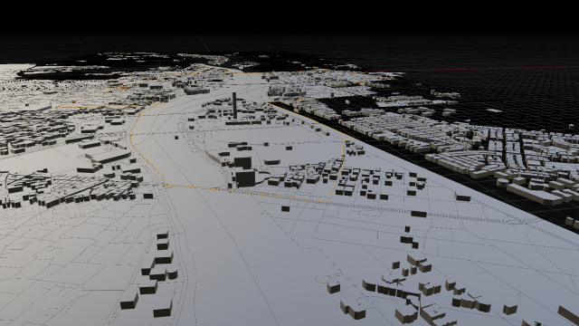

2024PROJECTION & FULLDOME
Name: Cairo Immersive & Virtual Tour Experience
Description: Contributed to the creation of an awe-inspiring 3D model of Cairo city and the Nile River with subsequent projection mapping in a dynamic dome setting, I brought a wealth of experience and passion for seamlessly blending technology, art, and cultural narratives. My Role: Utilize advanced 3D modeling...